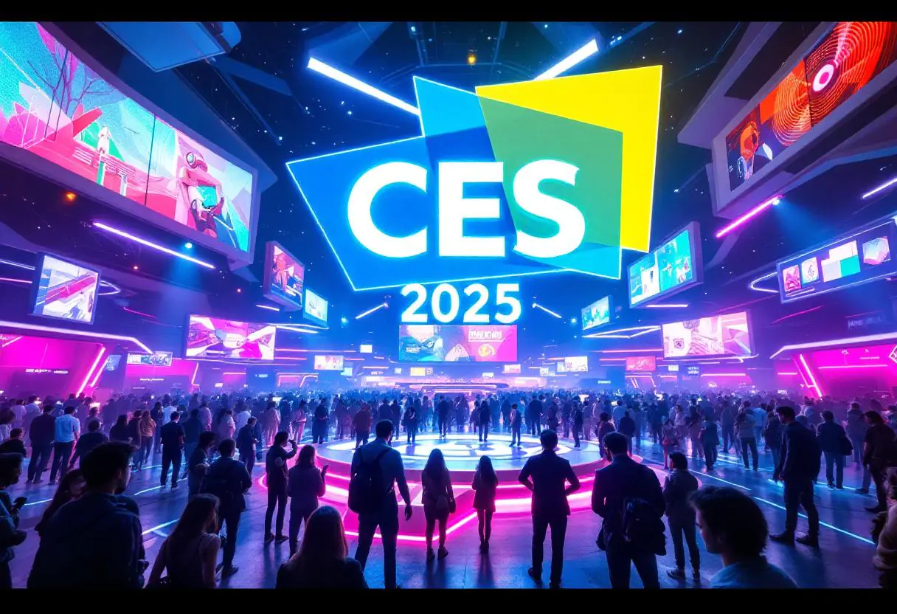

Between January 20 and 24, global leaders met in Switzerland to
discuss the economy, technology, climate change, and the future of
work.
Product launches and announcements at CES 2025 (Las Vegas)

The world's largest technology event revealed innovations in
embedded AI, mobile chips, self-driving cars, 16K TVs, XR glasses,
connected homes, and domestic robots.
Fabuary
Critical dengue situation
Despite the state of São Paulo declaring a state of health emergency
due to a dengue epidemic (nearly 300 cases per 100,000 inhabitants)
Agência Brasil, the country as a whole recorded a drop of about
60–65% in dengue cases in the first weeks of 2025 compared to the
same period in 2024.
AI Breakthroughs in February 2025
February 2025 marked a major leap forward in artificial
intelligence, with models becoming significantly more intelligent
and capable than ever before. New systems were released with
enhanced reasoning, smoother multitasking, and the ability to
understand text, voice, and images simultaneously. AI-generated
videos reached a new level of realism, and assistants became
powerful enough to create full applications, debug complex code, and
interact naturally with users. Overall, February solidified 2025 as
the year when multimodal super-intelligent AI truly became
mainstream. same period in 2024.
March
The Great Eclipse of Lights
On March 12, 2025, a strange global event occurred. Every source of
artificial light on Earth — streetlamps, houses, cars, skyscrapers —
flickered at the exact same moment. Then, places that had no
electricity at all, such as forests and deserts, began to glow with
a soft natural light, pulsing in sync with major cities.
The Quantum Patch
In March 2025, something unbelievable shook the entire tech world:
the accidental release of the “Quantum Patch,” a software update
created by a small Brazilian startup called LumiNova Tech. The patch
was meant to optimize GPU performance, but instead, it unlocked a
bizarre side effect—devices started predicting actions five seconds
before they happened.
April
March of the Living – 80th Anniversary
On April 24, thousands participated in the Holocaust memorial march
in Poland, marking one of the largest commemorations of this
historical event.
New AI Models from OpenAI
On April 16, 2025, OpenAI released the o3 and o4-mini models,
expanding AI tools for productivity, automation, and software
development.
May
India–Pakistan Conflict Escalation
On May 7, 2025, tensions escalated after Indian military actions in
response to a terrorist attack in Kashmir, raising global concerns.
ViennaUP Startup Festival
Held from May 8–16 in Vienna, the festival brought together
startups, investors, and innovators from across Europe.
June
Hague Summit 2025
World leaders met to discuss collective defense strategies and
increased military cooperation amid global tensions.
Apple WWDC 2025
From June 9–13, Apple presented major software updates and new AI
features across its operating systems.
July
17th BRICS Summit – Rio de Janeiro
Leaders discussed economic cooperation, climate governance, and the
global regulation of artificial intelligence.
World Congress on IT & Computer Science
International professionals gathered in Malaysia to exchange
knowledge on emerging technologies and digital innovation.
August
Hiroshima Day – August 6
A global moment of remembrance highlighting nuclear disarmament,
peace, and ethical responsibility in science and technology.
Black Hat USA 2025
One of the world’s most important cybersecurity conferences,
focusing on AI security, cyber threats, and ethical hacking.
September
International Day of Charity
Humanitarian organizations emphasized digital platforms and
transparency tools to improve global aid efforts.
AI Becoming Standard
Artificial intelligence was no longer experimental, becoming a
built-in feature in operating systems and business software.
October
AI Days – University of Florida
Held from October 24–29, this major academic event explored how AI
is shaping the future of science and technology.
WHO Webinar: AI & Health Records
The World Health Organization discussed the impact of AI on
electronic health records and healthcare systems.
November
AI in Science Summit – Copenhagen
Scientists, industry leaders, and policymakers explored AI-driven
scientific discovery and shared research resources.
EU AI & Energy Event
The European Union examined how AI can strengthen energy systems and
infrastructure resilience.